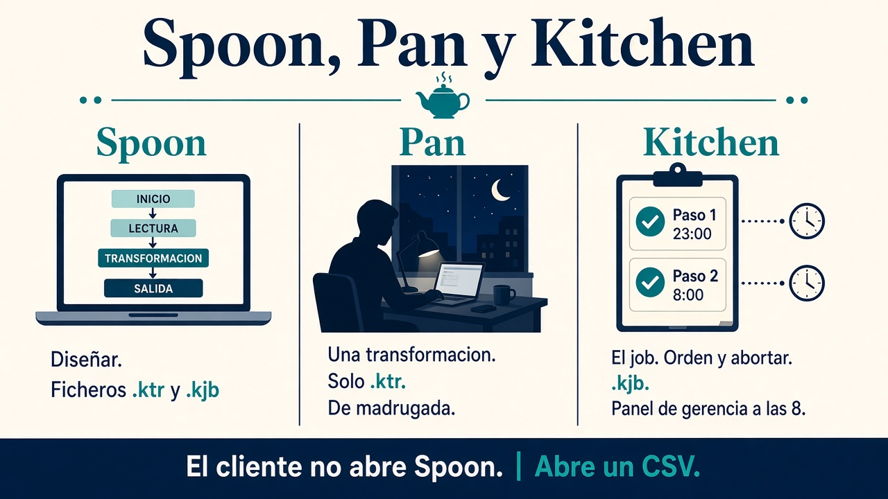
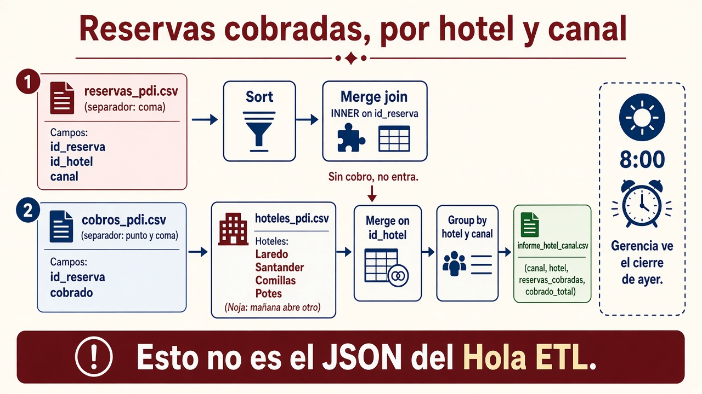

1.8. Pentaho: procesar y presentar¶
Los criterios d) y e) del RA1 se cierran aquí: procesar el dato ya almacenado y enseñárselo a alguien que no abre Spoon.
En el aula usáis Pentaho Data Integration (PDI / Kettle), de Hitachi Vantara. No sustituye a Spark en un clúster de petabytes. Sí os deja ver un ETL: extraer, filtrar, unir, agregar y cargar sin programar el motor.
Cómo se lee esta página
0 es el entorno. 1–3 se hacen en clase (filtro, cruce, JSON). 4–5 son nube y el job de madrugada: si el aula no tiene cubo, el CSV acaba en una carpeta. 6 solo si hay PostgreSQL o MariaDB. Los relojes: finanzas cierra a las 23:00; Kitchen corre de noche; gerencia a las 8 ve el cierre de ayer. El e) es el fichero o la tabla, no un informe de Pentaho Server.
El PDF de prácticas (Pentaho.pdf) sirve para reconocer menús (dónde está Filter rows, Minimal width…). No copiéis sus ficheros ni sus rutas: allí salen códigos postales de Nueva York, Airbnb de Madrid y un RDS deportivo. Aquí el caso es el grupo hotelero de Cantabria. Tampoco copiéis credenciales que aparezcan en capturas.
Los CSV y el SQL de esta página:
| Fichero | Taller |
|---|---|
| alojamientos_cp.csv | 1 |
| reservas_pdi.csv, cobros_pdi.csv, hoteles_pdi.csv | 2 |
| cadenas_pdi.csv | 4 |
| alojamientos_opiniones.csv | 3 |
| incidencias.csv, incidencias2.csv, hotel_pdi.sql | 6 |
Estos reservas_pdi.csv / cobros_pdi.csv no son los que generáis en Hola ETL ni el reservas.csv de 1.7. Misma idea (reservas ⋈ cobros); otras columnas (id_hotel, no el nombre) y otro grano (informe, no JSON fila a fila).
Qué es PDI (y qué no)¶
Pentaho es una plataforma de integración y análisis. PDI es la pieza ETL: un lienzo donde arrastráis pasos y el motor mueve las filas. En esta UT no montáis el servidor de informes: el criterio e) es el CSV, el JSON o la tabla que gerencia ya entiende.
En jerga de Kettle se dice herramienta de metadatos porque vosotros declaráis qué tiene que ocurrir (leer este CSV, filtrar Trasmiera, escribir allí) y el cómo (buffers, tipos) lo resuelve el motor. Ese XML (.ktr / .kjb) no es el catálogo de negocio del 1.5 (qué significa canal). Se puede ejecutar igual en vuestro Windows y en un servidor sin pantalla.
Con Spoon, sin escribir el motor:
- conectar orígenes (CSV, Excel, XML, JSON, SQL, APIs);
- filtrar, limpiar, tipar, lookup, merge join, agregar, fórmulas;
- cargar a fichero, tabla o nube;
- esbozar hechos y dimensiones (reservas ⋈ hoteles): un trozo de esquema en estrella, no un almacén entero.
No es el programa de recepción: no picáis la reserva en PDI. Procesáis una copia.
| Característica | En el aula |
|---|---|
| Multiplataforma | Windows, Linux, macOS |
| Community / comercial | En clase, Community; la empresa puede pagar soporte |
| Motores SQL | PostgreSQL viene; MySQL/MariaDB piden el .jar en lib |
| Escala | Local, programada o en un servidor. Petabytes → otro stack |
Versión y Java
Usad la versión de PDI que indique el aula (en las prácticas, 9.4 Community). PDI 9.x espera Java 8. Si Spoon no arranca, lo primero es java -version, no “reinstalar Windows”. En Windows: descomprimid el zip y lanzad spoon.bat. En Linux: spoon.sh (puede hacer falta un JDK 8 y, en algunas distros antiguas, una librería WebKit; el profesor os dirá el paquete del lab).
Descarga Community (Hitachi / el espejo que indique el aula): el zip es pdi-ce-9.4.0.0-343.zip (carpeta data-integration, con spoon.bat). No bajéis pme-ce-…: eso es otro programa (editor de metadatos), no Spoon.
Tres ejecutables que se confunden¶

| Pieza | Analogía | Qué lanza | Fichero |
|---|---|---|---|
| Spoon | El taller | Diseñar (arrastrar pasos) | .ktr y .kjb |
| Pan | El obrero de una pieza | Una transformación sin ventana | .ktr |
| Kitchen | El capataz | Un job: orden, condiciones, abortar | .kjb |
Spoon es para clase y diseño. En producción (o en la entrega “como en empresa”) lanzáis Pan o Kitchen. Si solo funciona cuando pulsáis Play, el procedimiento no está cerrado.
Regla
¿Un solo flujo leer → filtrar → escribir? → transformación → Pan.
¿“Si no está el CSV, aborta; si está, borra el informe viejo y lanza dos transformaciones”? → job → Kitchen. Eso es el lote de después de las 23:00.
En PDI hay dos tipos de diseño:
- Transformación: el dato cambia (filas in, filas out).
- Job: orquesta (¿existe el fichero? ¿falló el paso anterior?).
Al conectar dos pasos, Spoon pregunta a menudo:
- Main output of step: el camino bueno (en Filter rows, la rama que cumple).
- Error handling of step: qué hacéis si este paso revienta.
Filter rows tiene dos salidas: la que cumple y la que no. Unid el Sort a la que cumple. El Dummy cierra la otra.
El lienzo (árbol de categorías a la izquierda, zona de trabajo, panel de Logging / métricas abajo) es el mismo en todos los talleres. El menú emergente sobre un paso (editar, previsualizar, conectar salida) lo usaréis hasta el cansancio.
Criterio d) y criterio e)¶
Habéis procesado (d) cuando la salida no es la entrada: menos filas, columnas con nombre de negocio, un agregado, un JSON que otra app entiende.
El cliente no abre Spoon. “Fácil de interpretar” (e) es:
- un CSV con cabeceras claras y solo las columnas pedidas,
- un JSON coherente,
- una tabla que Power BI o un informe ya entienden,
- un agregado (importe por hotel y canal) en lugar de veinte mil reservas crudas.
Prueba del cliente
Cerrad Spoon. Abrid el fichero como lo abriría alguien de empresa: Excel, un visor JSON, una consulta SQL. Si tiene que preguntaros “¿qué es id_cadena?”, el e) no está cerrado.
Cómo atacar cada taller¶
- Escribid en una nota del lienzo (botón derecho → New Note) la pregunta del cliente y vuestro nombre.
- Marcad origen, la T mínima y el destino. Si no cabe en una frase, el flujo está sobrado o incompleto.
- Preview (ojo de la barra o clic derecho): 1000 filas por defecto. Ahí cazáis el nulo y el tipo raro. Stop para cortar.
- Mirad las métricas. En el log veréis letras del estilo
I(input),O(output),R(read),W(written),U(updated),E(errors).E=1no es un detalle: es una fila que no hizo lo que pedisteis. - Volved a ejecutar con Pan o Kitchen.
- Abrid el artefacto sin Spoon.
Rutas: no dejéis C:\Users\tu-cuenta\... tapadas si el .ktr tiene que correr en el aula. Usad una carpeta de trabajo acordada o variables.
Nube y secretos
Credenciales de AWS o Azure nunca van en el .ktr que subís a Moodle ni en un repo. Variables de entorno, no capturas del appId / password. Un bucket público con s3:* y Principal: * es un ejemplo de qué no dejar en producción.
Taller 0 — Que Spoon hable¶
Objetivo: una transformación que no lee un CSV. Comprobáis que PDI arranca y veis la versión.
- File → New → Transformation (o
Ctrl+N). - Categoría Input → Get system info (Información del sistema). Doble clic: un campo
Version_PDIalimentado de Kettle Version. - Categoría Utility → Write to log. Arrastrad un hop del primero al segundo (New hop / nueva conexión).
- Run o
F9. El panel Logging debe mostrar la versión.
Si esto falla, no paséis al taller 1: el entorno no está listo.
Taller 1 — Filtrar, ordenar, persistir y Pan¶
Cliente: “Listado de alojamientos de la comarca Trasmiera, ordenados por código postal, en un CSV limpio.”
Fichero: alojamientos_cp.csv (hotel, comarca, codigo_postal). Hay más nombres que los cuatro del esqueleto (Noja, Santoña, Isla…): es el “mañana abre otro”.
Leer¶
- Nueva transformación.
- CSV file input. Ruta al CSV. Get fields / Traer campos: comprobad nombres y tipos.
- Preview: deben salir filas de Santander,
Liebana(sin tilde, así está el CSV) y Trasmiera.
Filtrar¶
Flow → Filter rows. Condición: comarca = Trasmiera (el texto tiene que coincidir; trasmiera no vale). Conectad la rama que cumple hacia el Sort.
Preview sobre el filtro: Laredo, Noja, Santoña, Isla… Stop cuando os baste.
Ordenar y un error a propósito¶
Transform → Sort rows. Campo codigo_postal.
Para ver cómo avisa Spoon: escribid CP en vez de codigo_postal. Preview: icono de prohibido, log y métricas con el campo inexistente. Corregid. Así dejáis de “adivinar” el nombre.
Escribir¶
Output → Text file output. Conectad desde el Sort. Primera ejecución: a menudo rellena con espacios (anchura fija). Pestaña Fields → Minimal width. Segunda ejecución: Mirador Laredo;Trasmiera;39770 sin cola de blancos.
Habéis procesado (menos filas, ordenadas) y presentado (CSV que se abre en Excel).
Pan (sin Spoon)¶
Guardad taller1_trasmiera.ktr. Borrad el CSV de salida. En la carpeta de PDI:
En Linux/macOS: pan.sh /file=.... El log debe terminar en Finished y el fichero debe reaparecer. Eso es el procedimiento de madrugada.
Parámetros útiles (también en Kitchen): /level:Basic (o Error, Debug, Rowlevel…) y /param:"nombre=valor" si el flujo espera variables.
Taller 2 — Unir dos orígenes y agregar¶
Cliente: “Importe cobrado y número de reservas por hotel y canal. Las que aún no tienen cobro no entran.”
Es la misma idea que el Hola ETL (reservas ⋈ cobros, solo cobradas). No reutilicéis aquellos CSV: aquí el hotel va por id_hotel, el cobro va con punto y coma, y gerencia quiere un agregado, no el JSON de una fila.

| Fichero | Separador | Rol |
|---|---|---|
| reservas_pdi.csv | coma | Hecho (estancia) |
| cobros_pdi.csv | punto y coma | Cobro |
| hoteles_pdi.csv | punto y coma | Dimensión (Laredo, Santander, Potes, Comillas; Noja es extra) |
- Dos (o tres) CSV file input. En cobros y hoteles,
Delimiter = ;. - En reservas, Get fields y dejad
id_reserva/id_hotelcomo Integer (o String si Spoon se come un código con ceros; aquí no hace falta). - Join → Merge join. En Spoon, el hop se tira desde el Merge hacia cada origen (así nombra left y right). Clave:
id_reserva(reservas ⋈ cobros). Tipo INNER: las reservas sin fila en cobros no entran.
Spoon avisa: si los flujos no están ordenados por la clave, el join miente. Añadid Sort rows por id_reserva en cada rama antes del merge. Preview del merge: aún no está el nombre del hotel (falta la dimensión); sí debe estar cobrado.
- Tercer origen
hoteles_pdi.csv+ otro Merge join porid_hotel(otra vez: ordenar ambas entradas porid_hotel). Ahí aparecen Laredo, Santander, Comillas, Potes. - Statistics → Group by. Agrupad por
hotelycanal. Agregados:SUM(cobrado)con nombrecobrado_total,COUNTdeid_reservacon nombren_reservas. Esos nombres los ponéis vosotros en la columna Name; Spoon no los inventa. - El Group by también quiere el flujo ordenado por las columnas de agrupación. Sort por
hotel,canalentre el merge y el grupo. - Text file output →
informe_hotel_canal.csv.
Criterio e): gerencia lee unas pocas filas (hotel × canal), no el cruce fila a fila.
Taller 3 — Limpiar, filtrar en serio y JSON¶
Cliente: “Alojamientos para un escaparate web (no es el PMS ni el panel de las 8): no habitación privada, precio real menor de 200 €, estancia mínima de 4 noches o menos. En JSON, claves en castellano.”
Fichero: alojamientos_opiniones.csv. Hay nulos a propósito (puntuacion, estancia_min) y un precio -1.
Leer y elegir columnas¶
CSV file input, separador ,. Get fields: precio y puntuacion como Number; id, dormitorios, huespedes como Integer.
Transform → Select values: quedaos con id, tipo, comarca, dormitorios, puntuacion, huespedes, precio, estancia_min y renombrad, por ejemplo:
| Original | Salida |
|---|---|
id |
alojamiento_id |
tipo |
alojamiento_tipo |
comarca |
comarca |
precio |
precio |
estancia_min |
noches_min |
Nulos¶
Un Java Filter sobre noches_min revienta o miente si el campo es nulo. No copiéis un < 4: el cliente pide 4 o menos (<= 4).
Utility → If field value is null. Sustituid nulos de precio y noches_min por -1. Luego el filtro debe excluir esos -1: no los coléis como “baratos”.
Filtro simple y filtro Java¶
Filter rows basta para precio < 200. Condiciones con && / || y texto se leen mejor en Flow → Java Filter. Ejemplo (ajustadlo a vuestros nombres de campo):
(precio >= 0 && precio < 200) && (noches_min >= 0 && noches_min <= 4) && !alojamiento_tipo.equals("Habitacion privada")
Podéis poner Dummy en la rama que no cumple (no hace nada; cierra el camino) y la salida JSON en la que sí.
JSON¶
Output → JSON output.
- Filename: ruta de
escaprate_cantabria.json. - Json bloc name: p. ej.
alojamientos. - Nr rows in a bloc:
0= un solo documento con todos;1= un fichero por fila (casi nunca lo queréis aquí). - Pestaña Fields → Get fields. Si no, el JSON sale con objetos vacíos.
Ejecutad. Abrid el JSON sin Spoon. Si un compañero de DAW entiende las claves, el e) va bien.
Taller 4 — Fórmula y dejar el informe en la nube¶
Cliente: “Por costa / ciudad / interior: noches cobradas, importe cobrado y precio medio por noche. El CSV tiene que acabar en el almacenamiento del centro (S3, Azure o la carpeta que diga el profesor).”
Partís del taller 2 (reservas ⋈ cobros ⋈ hoteles). Añadís cadenas_pdi.csv (Costa, Ciudad, Interior):
- CSV de cadenas (
;) → Sort porid_cadena. - Sort del flujo de hoteles por
id_cadena. - Merge join
id_cadena. - Sort por
cadena→ Group by:id_cadena,cadena. En Name del agregado:SUM(noches)→noches_total,SUM(cobrado)→importe_total. - Transform → Calculator. Operación A/B (o la equivalente en vuestra versión):
importe_total / noches_total→precio_medio_noche. Recorred el desplegable: hay texto, fechas y números; no memoricéis la lista.
Si el aula no tiene cubo, Text file output a informe_cadenas.csv en la carpeta de trabajo y listo: el oficio de d) y e) ya está.
Destino S3 (si el aula usa AWS)¶
- Bucket del centro (el nombre lo da el profesor; no copiéis el de otro ciclo).
- Credenciales por variables de entorno (
AWS_ACCESS_KEY_ID,AWS_SECRET_ACCESS_KEY, y si aplicaAWS_SESSION_TOKEN) o el perfil~/.aws/credentials. - Paso S3 file output. URI:
s3n://NOMBRE-BUCKET/informe_cadenasy extensióncsv. No pongáiss3n://s3n/…(ese dobles3nes un error conocido de PDI).
Una política Principal: * + s3:* deja el cubo abierto al mundo. En clase, si os la muestran, es para que el paso funcione; no es el diseño de una empresa.
Destino Azure (si el aula usa cuenta de estudiante)¶
El PDF detalla clics de Azure; aquí basta el oficio:
- En Azure: grupo de recursos → cuenta de almacenamiento → contenedor.
- En el PC: Azure CLI (
winget install -e --id Microsoft.AzureCLI), cerráis y abrís PowerShell,az version. - Para automatizar: un service principal con rol Storage Blob Data Contributor sobre vuestro ámbito;
az login --service-principalconCLIENT_ID,CLIENT_SECRET,TENANT_IDen variables de entorno. No peguéis esos valores en el apunte, en el PDF ni en Git. - Subida idempotente:
az storage container create --account-name TU_CUENTA --name practicas-bda --auth-mode login --only-show-errors
az storage blob upload --account-name TU_CUENTA --container-name practicas-bda --file informe_cadenas.csv --name informe_cadenas.csv --overwrite true --auth-mode login
Alternativa: token SAS (sin az login). Caduca; no lo subáis a un repo.
En Spoon, si vuestra versión trae paso de Azure Blob, usadlo con las mismas precauciones. Si no, el job (taller 5) puede llamar a un script después de generar el CSV local.
Habéis procesado (d: agregáis y calculáis) y presentado (e: tres números por costa/ciudad/interior, en un sitio que gerencia ya usa).
Taller 5 — Un job que no se miente¶
Cliente: “A las 23:00 cierra el día. De madrugada: si ya existe el informe del taller 2, bórralo; regenera 2; si ese CSV no apareció, para (no pintéis el panel de las 8 con un hueco); luego el 4.”
El taller 4 vuelve a leer los CSV de reservas; no consume informe_hotel_canal.csv. El File exists del 2 es la compuerta: si el cruce falló, no seguís.
- File → New → Job.
- General → Start.
- Conditions → File exists sobre
informe_hotel_canal.csv. - Si existe: Delete files + (opcional en clase) Display msgbox info “He borrado el informe viejo”. En un servidor sin ventana, el msgbox estorba: en la entrega “empresa” quitadlo.
- General → Transformation: el
.ktrdel taller 2. Unid tanto la rama “no existía” como la de “ya lo borré” a esta transformación. - Otro File exists sobre el CSV que debe haber dejado el 2. Si no está: Utility → Abort job. Así no dais por bueno un panel vacío.
- Segunda Transformation (taller 4). Si comprobáis objeto en S3/Azure, el mismo File exists admite esquema S3 (URL del bucket) en muchas versiones; si no, un paso Shell / script del aula. Sin cubo: comprobad el CSV local.
Guardad taller5_noche.kjb.
Linux: kitchen.sh /file=taller5_noche.kjb.
Taller 6 — Hablar con una base de datos¶
Cliente: “Las incidencias del mostrador llegan en CSV; los nombres están en la tabla de huéspedes. Inserta el cierre, actualiza si ya existía, y si el id no encaja, que se vea por qué falló.”
En el PDF el ejemplo es RDS y deporte. Aquí el esquema es el hotel, en local (PostgreSQL o MariaDB). RDS vale si el profesor lo monta; el oficio no cambia.
Preparar¶
- Cread una base
hotel_pdiy ejecutad hotel_pdi.sql (tablahuespedes+fases_incidencia). Si lo ejecutáis dos veces, losINSERTde huéspedes chocan con la clave; no hace falta repetirlos. - PDI trae driver de PostgreSQL. Para MySQL/MariaDB: copiad un conector JDBC compatible con vuestra 9.4 en la carpeta
libde PDI y reiniciad Spoon. El “último jar del universo” a veces no carga. - File → New → Database connection. Host
localhost, base, usuario de aula. Probad la conexión.
Lookup (enriquecer el CSV)¶
Leed incidencias.csv (id_huesped;tipo;fecha).
La tabla huespedes tiene siempre tipo = huesped. El segundo campo está para practicar una clave de dos columnas (en otros oficios no basta el id):
- Transform → Add constants:
tipo_entidad=huesped. - Lookup → Database lookup: claves
id_huesped+tipo_entidad→nombre(y lo que pidáis).
Preview: nombres de Ana, Luis… Si un id no existe, los campos salen nulos. Marcad Do not pass the row if the lookup fails si no queréis esa fila en el flujo bueno.
Insertar¶
Misma lectura. Get system info: campo sysdate = fecha/hora del sistema (el cierre “termina ahora”).
Output → Table output → fases_incidencia. Get fields y mapead id_huesped, tipo, fecha del CSV → columna fecha_inicio, sysdate → fecha_fin.
Comprobad en SQL:
Actualizar y ver el error¶
Leed incidencias2.csv. Output → Update: claves de búsqueda id_huesped y fecha del flujo, mapeadas a id_huesped y fecha_inicio de la tabla; campos a pintar (tipo, lado, comentario). El Update mira fases_incidencia, no la tabla de huéspedes.
Tras el insert del CSV 1 (ids 1–4), este segundo fichero trae 1, 3, 5 y 99:
- 1 y 3: hay fase → actualizan.
- 5 (Eva): está en huéspedes, no hay fase previa → el Update falla.
- 99: no hay huésped ni fase → también falla.
Esperad E=2, no E=1. Clic derecho en el Update → Error handling…: rellenad Error description fieldname y Error fields fieldname. Conectad esa salida a Write to log. Al repetir veréis qué clave falló, no solo “ha habido un error”.
Upsert¶
Si en vez de fallar queréis insertar lo que no exista: Insert / Update (no es el mismo paso que Update). Eso es la carga diaria que no duplica la clave. En este esquema no hay PK en fases_incidencia: las claves de búsqueda las definís vosotros en el paso.
Mapa de pasos ↔ criterios¶
| Taller | Pasos que tenéis que saber nombrar | d / e |
|---|---|---|
| 0 | Get system info, Write to log | Entorno |
| 1 | CSV input, Filter, Sort, Text file output, Pan | d + e (CSV) |
| 2 | Merge join, Sort (obligatorio), Group by | d + e (agregado hotel × canal) |
| 3 | Select values, If null, Java Filter, JSON output | d + e (JSON) |
| 4 | Merge extra, Calculator, S3 / Azure / carpeta | d + e (nube o carpeta del aula) |
| 5 | Start, File exists, Delete, Abort, Transformation, Kitchen | Procedimiento (23:00 → 8:00) |
| 6 | Conexión JDBC, Constant, DB lookup, Table output, Update, Error handling, Insert/Update | d con una BD |
Upsert = si la fila existe, actualiza; si no, inserta.
Errores que se repiten¶
- Kitchen sobre un
.ktro Pan sobre un.kjb. - Filtrar “en la cabeza” y no en un paso: no es reproducible.
- Merge join / Group by sin ordenar por la clave.
- Java Filter + nulos sin If field value is null.
- JSON output sin Get fields.
- Cumplir d) (el fichero se genera) y olvidar e) (nadie entiende las claves).
- Rutas absolutas de vuestra cuenta de casa.
- Seguir el PDF con
listings.csvde Madrid o unsportsde RDS.
Al terminar la UT1
Ante un problema propuesto: almacén (a), ingesta (b), formato (c), procesar con PDI u otra herramienta del centro (d) y enseñar un resultado que no requiera ser ingeniero (e).
Actividad¶
No puntúa en Moodle. Una línea de por qué.
- Habéis diseñado un solo flujo leer → filtrar → CSV. En el servidor sin ventana, ¿Pan o Kitchen?
- La reserva 4 de Santander no tiene fila en
cobros_pdi.csv. ¿Sale en el informe del taller 2? - Java Filter con
noches_minnulo, sin If field value is null. ¿Qué pasa? - Gerencia pide el cierre de ayer. ¿Les dejáis el
.ktroinforme_hotel_canal.csv?
Comprobación
Pan / no (inner: sin cobro no entra) / el filtro revienta o miente / el CSV (el criterio e no es Spoon).
Autoevaluación del 1.8¶
Quince preguntas (A–D, una correcta) sobre lo esencial del apartado. No puntúan en Moodle. En cada una, Comprobar respuesta: si es correcta o no, y una explicación breve. Podéis repetir el test.
Para practicar (Moodle manda)¶
No sustituye a la entrega. Comprobad que lo sostenéis en voz alta.
- Talleres 0 a 3:
.ktr+ captura del lienzo con nota (nombre completo + pregunta del cliente). Abrid el CSV/JSON fuera de Spoon. - Talleres 4 y 5: el informe costa/ciudad/interior en el destino que indique el profesor (S3, Azure o carpeta del aula) y el
.kjblanzado con Kitchen. - Taller 6 (si el aula tiene BD): lookup + insert + update con el error de las filas 5 y 99 explicado (captura del log,
E=2). - Opcional: el tutorial Community de Hitachi Vantara (lista de correo: limpiar, tipar y cargar un CSV a una tabla). Mismo oficio, otro enunciado.
La entrega, si la hay, es Moodle. No hace falta compartir el .ktr fuera del centro.